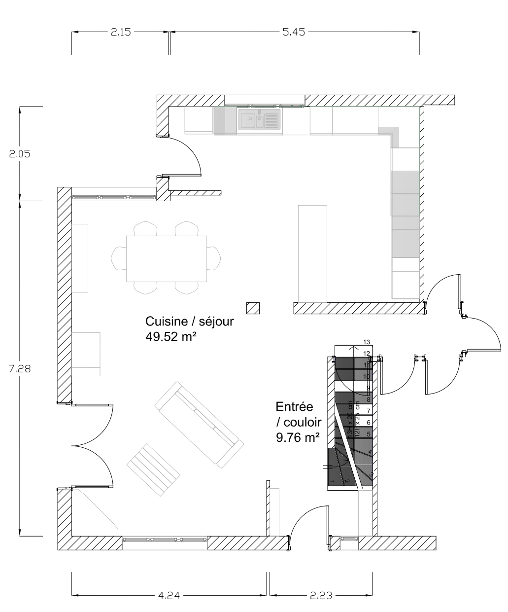

Séjour & cuisine ouverte
Ce projet présente deux propositions d’aménagement d’un séjour situé à Trélissac, imaginées afin d’explorer différentes ambiances pour un même espace de vie.
L’objectif était de repenser l’organisation et l’atmosphère du salon tout en conservant la même configuration spatiale. À partir d’un même volume et d’un même aménagement, deux directions esthétiques ont été développées afin d’illustrer comment le choix du mobilier, des matériaux et des couleurs peut transformer la perception d’un espace.
Ce projet met en lumière l’importance des choix esthétiques dans l’architecture d’intérieur. À partir d’un même espace, différentes ambiances peuvent être imaginées afin de répondre aux préférences et au mode de vie des occupants.
Cette démarche illustre l’approche de LFB Studio qui consiste à concevoir des espaces fonctionnels, harmonieux et adaptés aux usages du quotidien.

Plan d'aménagement

Proposition 01 — Mid-century
Cette première proposition s’inspire du design mid-century. Les lignes sont épurées, les matériaux chaleureux et les teintes soigneusement équilibrées afin de créer une ambiance élégante et intemporelle inspirée des années 50 et 60.


Proposition 02 — Scandinave contemporain
La seconde proposition adopte une esthétique plus douce et cocooning. Les matières naturelles, les couleurs claires et les textures chaleureuses contribuent à créer un espace confortable, lumineux et accueillant.